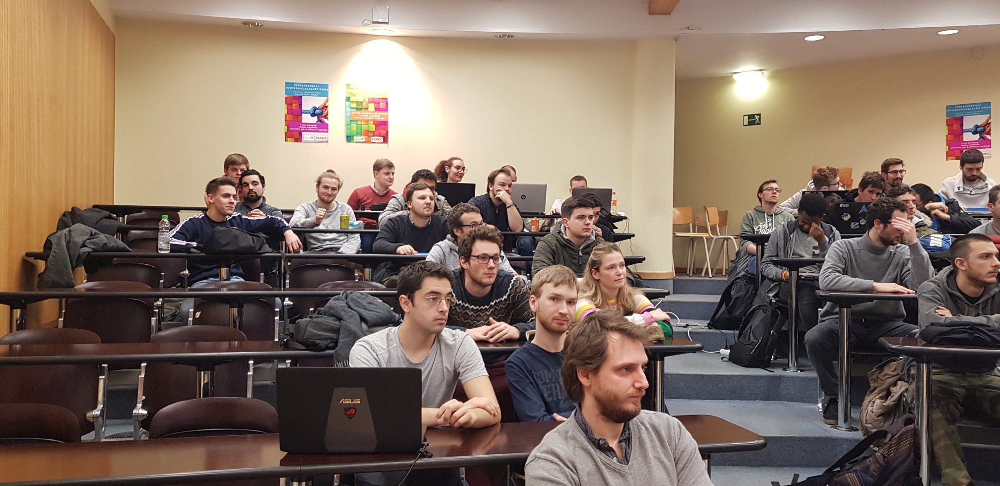
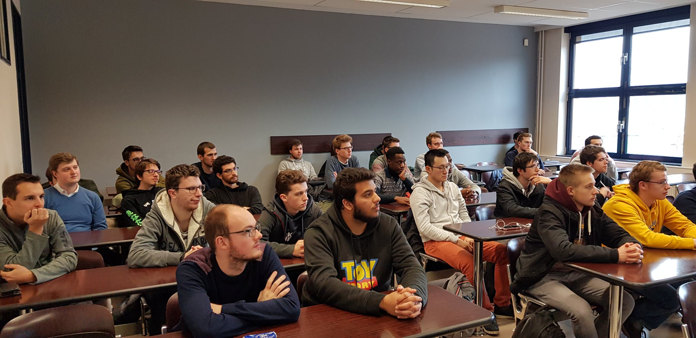

Nous avons été présenté au Cyber Security Challenge. Il s'agit d'une
compétition par équipe de maximum 4 sur le sujet de la Cybersécurité.
Elle existe depuis 2015.
La première manche se fait en ligne du 13 au 14 mars 2019. Il s'agit
de résoudre différents défis pour gagne des points.
Les meilleurs participants vont en finale internationale à Bruxelles
du 29 au 30 mars 2019.

Présentation Cyber Security Challenge du 05/02/19

Présentation Cyber Security Challenge du 04/02/20
Lien vers le site de l'événement